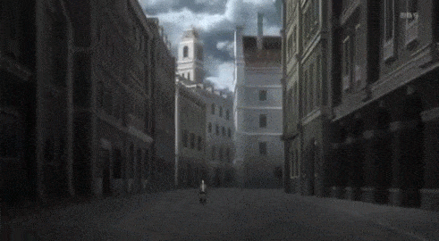
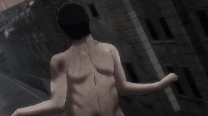
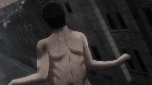

純潔巨人
純潔巨人（日語：無垢の巨人，英譯：Pure Titan）
在帕拉迪島的歷史中，一百多年前突然出現的人型巨大生物。身高約為3至15公尺不等，體型多為男性，無生殖器官，有溫度極高的體溫以及數秒至數分即可恢復的強大再生力。
唯一的弱點為頭部連接身體頸椎後方長1米寬10公分的「後頸」，當該部位受到嚴重的破壞後則會失去再生能力，並且身體組織以及肌肉會蒸發掉，即為死亡。
無須進食，活動力來源為陽光，阻隔陽光後會停止活動進入休眠，依個體不同進入休眠的時間也會有所不同，身體的密度較人類低，即重量比等比例放大之人類輕。
巨人唯一的行動動機為吞食人類，但由於無須進食也可生存，因此推測吞食人類的動機並非捕食而是殺戮。所有的巨人皆為艾爾迪亞人變成。
一般巨人（日語：通常種）
為純潔巨人的一種，只為了捕食眼前的人類，無特別行動，有一定的學習能力，有聲帶可發聲，行動易猜測因此容易應對。
奇行種巨人（日語：奇行種）
大致與一般巨人相同，亦為純潔巨人，不同的是不會只捕食眼前的人類，有時只對特定目標進行捕食，又或者只對人群進行捕食，善於疾跑以及跳躍（甚至爬行），行動難以預測因此應對困難。
月光巨人
無須陽光也可活動的巨人，捕食目標有時為眼前的人類有時卻是以特定目標進行捕食，有時卻不進行捕食，行動模式就像被什麼人控制了一樣，實際上是受到吉克·葉卡控制的巨人。



